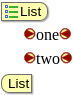
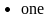
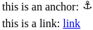

Daxe
- Daxe configuration files
- Introduction
- Definition of the XML language
- File saving options
- Menus
- Node display
- Display types
- Strings
- CMS integration
- Introduction
- Launching Daxe
- Saving files
- Directory listing
- Extending Daxe
- Introduction
- Creating a new extension
- Creating new display types
- More customization
Index
Daxe
Daxe is an XML editor for the web. It works in the same way as Jaxe, using an XML schema and a configuration file to define the XML language and the editor UI. A number of common element displays are provided with Daxe to make it easy to create a new editor UI for any XML language.
Daxe is written in Dart, which is transformed into Javascript to work in modern web browsers (it does not work on IE before version 9). As with any Javascript application, it works without the need for a plugin.
In itself, Daxe is not very useful, because it cannot open or save a local file (because of browser restrictions). It needs to be either used with the Daxe desktop application, or included into a larger system like a CMS. Daxe is now integrated into WebJaxe, and will soon be used in LON-CAPA.
Using Daxe
An XML file can easily be opened in Daxe with the following parameters:
-
config: the path to the configuration file (required)
-
file: the path to the file to be edited (optional, a new document is created if it is not specified)
To integrate Daxe into a larger system and make it possible to save documents, see CMS integration.
Building and testing
- Get the code from Daxe on github
- Install the Dart SDK.
-
./build.sh (or just pub build with pub on the PATH)
- copy the build/web directory on a server (here localhost, with the contents of build/web inside a daxe directory)
- run with the URL http://localhost/daxe/daxe_js.html?config=config/XPAGES_config.xml
Precompiled version
If you have trouble compiling (the Dart SDK is not available on all platforms), you can use this precompiled version, but it will not be up-to-date.
daxe.zip
Daxe configuration files
Introduction
To provide a user interface for a given XML language, Daxe needs the language definition (given with an XML schema) and a configuration file describing the user interface for the language. It works in the same way as Jaxe, but the config files use a different language. An XSLT stylesheet is available in the config directory to transform a Jaxe configuration file into a Daxe one.
Specifically, configuration files contain basic information about the XML language (a link to the schema and a list of root elements), saving options, menus (especially to insert the elements), display types for the elements, and all the strings used in the interface, depending on the user language.
They are located in Daxe's config directory, and their names end with "_config.xml".
Definition of the XML language
Element definition
-
XML schema file
When creating a new config file, the first thing to do is to define the corresponding XML language. This is usually done by specifying an existing XML schema. Schemas must use the W3C syntax (WXS), or the Relax NG one (in XML).
-
Root
After defining the XML language, it is necessary to give Jaxe one or several possible root elements to use for new documents. The name of the element is specified for each possible root element.
Element tree
Element tree under Language :
-
Language (XML schema file, Root+)
-
XML schema file @name
-
Root @element
File saving options
Element definition
-
Doctype
Document type definition, if a DTD must be specified in the document headers.
-
SchemaLocation
To save the location of the XML schema in XML documents.
-
Namespace prefix
Prefix to use for a given namespace. It is possible to specify several namespace prefixes.
Element tree
Element tree under Saving :
-
Saving (Doctype?, Namespace prefix*)
-
Doctype @publicid @systemid
-
SchemaLocation @schemaLocation @noNamespaceSchemaLocation
-
Namespace prefix @uri @prefix
Menus
Menus defined in config files are displayed above Daxe's text area, after the file and edit menus.
Element definition
-
Menu
A main menu, possibly containing sub-menus.
-
Insertion menu
A menu to insert an XML node at the cursor position. The node name and the node type (element by default) must be specified. It is also possible to specify a keyboard shortcut, with the corresponding key.
-
Function menu
Menu to execute a function with its name. The only predefined function in Jaxe is jaxe.FonctionNormal, which is used to remove all the styles in a text area. Other functions can be added by extending Daxe.
-
Separator
Menu separator.
Element tree
Element tree under Menus :
-
Menus (Menu+)
-
Menu @nom (Menu | Insertion menu | Function menu | Separator)+
-
Insertion menu @name @node type (element|instruction|comment) @shortcut
-
Function menu @name @class @shortcut
-
Separator
-
Menu
Node display
An essential feature in Daxe is the possibility to display and edit XML element in different ways, whatever their types in the XML schema. For instance, a table element can be displayed as a table, and an element linking to an image can be displayed as an image. The objective is to ease document editing, without losing of sight their semantics : elements will not be displayed as they will be seen in web pages or PDF documents, but simply with a user interface making edition easier and highlighting the meaning of the elements.
Element definition
-
Element display
Specifies how an element will be displayed in Jaxe
-
Parameter
A display parameter, depending on the display type (see below for a list).
-
Suggested value
Value suggested to the user when the schema does not limit authorized values.
-
Attribute display
Can be used to suggest attribute values.
Element tree
Element tree under Display :
-
Display (Element display)+
-
Element display @element @type (Parameter | Suggested value | Attribute display)*
-
Parameter @name @value
-
Suggested value
-
Attribute display @attribute (Suggested value+)
Display types
| Type |
Description |
Display |
|
division
|
Two bars extending to the window's right side, clearly separating large areas in the document. |

|
|
area
|
Two tags and carriage returns, to separate areas smaller than with division. |

|
|
block
|
A block hiding the start and end tags, as an alternative to division and area. Attributes are displayed on top, in a short or editable view, and the block can be collapsed with a button. |

|
|
string
|
Two tags to identify a small string, without any carriage return. |

|
|
empty
|
A single tag, typically for an empty element. |

|
|
table
|
Table display allowing the use of XML elements inside the cells. Also handles the rowspan and colspan attributes to gather cells vertically and horizontally. |

|
|
tr
|
Table row. |
|
td
|
Table cell. |
|
style
|
For use in the case (very rare if the XML language encodes the meaning as opposed to the presentation) where an XML element only conveys a style information. Displays the characters in the chosen style (bold, italic, ...), without any tag. An alternative is to use the string type, which can also use a style, but displays the tags. |

|
|
file
|
Displays an image based on its path on the disk coming from an attribute of the XML element (to be defined). It is possible to copy/paste images and Daxe will automatically create the XML element and save the image file whenever possible, using the first element of type file. |

|
|
symbol
|
Special character stored as a UNICODE character within the element tags. If no element has this type, users will still be able to insert UNICODE characters from a table. |
⇔
|
|
list
|
For an element representing a bulleted or ordered list. The sub-element must use the item type. The tags are displayed as for area, with a '+' button to create new items. |

|
|
item
|
List item in a list displayed with the list type. Displayed with bullets or numbers, depending on the list type. |

|
|
wlist
|
Displays a list with the default browser display for the HTML ul element. This provides a more WYSIWYG interface than list, because the list tags are hidden (which might also make it harder to edit the XML precisely). The witem type must be used for items. |

|
|
witem
|
Must be used for items in a list using the wlist type. |

|
|
simpletype
|
Displays an element having a simple value, in a small panel. Usable only for the elements with a simple type in the XML schema. The precise display (text field, menu or checkbox) and the validation are done based on the XML schema constraints. |

|
|
equationmem
|
Displays the image of an equation. The equation can be edited by a simple click on the image, with a dialog showing at the same time the text of the equation (using a very simple syntax specific to Jaxe/Daxe) and the corresponding image. The text of the equation is store as an attribute, and the image is encoded in base64 and added as text inside the element. |

|
|
equatexmem
|
This works in the same way as the previous type, but using a TeX syntax. |

|
|
form
|
Displays an element and all its sub-elements as a form. Beware not to use this type with elements that could have an infinitely deep subtree !
Sub-elements can be displayed as fields with the field type, or with other types (using other types within a form is only possible with Daxe, not Jaxe). |

|
|
field
|
Form field |
see above |
|
anchor
|
This is used to display WYSIWYG links with the HTML a element. |

|
|
hiddenp
|
Provides a WYSIWYG interface to paragraph elements. Tags are not displayed, and entering a newline where the paragraph element is allowed automatically triggers the insertion of a new paragraph. |

|
|
hiddendiv
|
Hides elements such as the HTML div to provide a more WYSIWYG interface. A new menu appears in the contextual menu to remove a parent div. |
|
|
stylespan
|
Normally used on an HTML span element, this makes Daxe use the element with this type to add style to text. Note that it is better to provide semantic elements rather than style ones like span. |
|
|
hr
|
Displayed as a horizontal line, as for the HTML hr element. |

|
|
br
|
Displayed as a line break, as the HTML br element. This display type might not play well with hiddenp, and should be avoided in general. |
|
Parameters can be specified for some display types, with the Parameter element under Element display.
Display types division and area can have a parameter specifying the name of the attribute to use as a title for the element display.
Display types file and symbol must have a parameter specifying the attribute with the file name.
Display types table must have parameters specifying the elements for the rows and the cells.
Display types style must have a parameter specifying the style.
Display types area and string can have a parameter specifying the style, a parameter with the font family, and a parameter with the font size.
Display types equationmem and equatexmem must have a parameter specifying the attribute to use for the equation text.
Here is a list of all the parameters:
| type |
parameter name |
description |
| division and area |
titleAtt |
attribute for the title |
| division, area, string and empty |
visibleAttributes |
displays all the attributes on the start tag (true|false) |
| table |
colspanAttr |
attribute to merge columns |
| table |
rowspanAttr |
attribute to merge rows |
| table |
alignAttr |
attribute to align text |
| wlist |
type |
type of list (ul|ol) (unordered/ordered) |
| style, area and string |
style |
BOLD | ITALIC | SUPERSCRIPT | SUBSCRIPT | UNDERLINE | STRIKETHROUGH | FOREGROUND[###,###,###] | BACKGROUND[###,###,###]
|
| area and string |
font |
font family |
| area and string |
size |
font size |
| file |
srcAtt |
attribute with the file name |
| file |
chooser |
when set to "true", the file chooser is used to select a file, from the XML file directory |
| file |
widthAtt |
the name of the attribute with the width (in pixels) |
| file |
heightAtt |
the name of the attribute with the width (in pixels) |
| item |
image1 |
first bullet image |
| item |
image2 |
second bullet image |
| equationmem and equatexmem |
textAtt |
attribute with the equation text |
| anchor |
nameAtt |
the name of the name attribute |
| anchor |
hrefAtt |
the name of the href attribute |
| hiddenp, hiddendiv and stylespan |
styleAtt |
the name of the CSS style attribute |
Strings
All the texts (also called strings) may have to be changed in the interface created with the configuration. Either to improve readability without having to change the schema, or to provide an interface in another natural language for the same schema. Texts may also have to be provided for a set of languages, so that users can edit the same documents, with the same Daxe configuration, but with an interface entirely in their native language.
For these reasons, the Strings element represents a set of strings for a given language and country, and it is possible to specify several in the same config file. On can use for instance language="pt" country="BR" for Brazilian Portuguese, or just language="en" so specify English without any precision about the country.
You may have noticed that the real config file XML elements have French names, even though you see them in English in Daxe and in this documentation. This is because the config file for config files is using these Strings elements to define titles to use for elements when the user's system language is English.
Element definition
-
Configuration description
Short line to describe the configuration, displayed in the dialog to create new documents with Jaxe.
-
Menu strings
Strings associated to a menu, identified with its name
-
Title
A title
-
Documentation
A documentation
-
Element strings
Strings associated to an XML element. Used to display the element, but also for this element's insertion menu if no string was defined for the menu.
-
Title for value
A title to use for an element or attribute value
-
Attribute strings
Strings associated to an attributes
Element tree
Element tree under Strings :
-
Strings @language @country (Configuration description | Menu strings | Element strings)+
-
Configuration description
-
Menu strings @menu (Title?, Documentation?, Menu strings*)
-
Title
-
Documentation
-
Menu strings @menu
-
Element strings @element (Title?, Documentation?, Title for value*, Attribute strings*)
-
Title
-
Documentation
-
Title for value @valeur
-
Attribute strings @attribut (Title?, Documentation?, Title for value*)
-
Title
-
Documentation
-
Title for value @valeur
CMS integration
Introduction
The Daxe web application needs to be integrated into a larger system to be able to save documents, as a web application does not have the rights to save a local file. Examples of integration include the Daxe desktop application (written in Dart), WebJaxe (written in PHP) and LON-CAPA (written in Perl).
In addition to a server-side processing of a request to save documents, servers should also provide directory listings with a specific format to let Daxe display a file chooser. This file chooser can be used to let users decide where to save an unsaved document, or to upload files used in the XML, such as image files.
Launching Daxe
The daxe directory on the web server should simply be a copy of the web directory after a build. These files are static and should be cached for better performance. The daxe.html is used for debugging with Dartium, and can be removed in production. The file to launch is named daxe_js.html after a build, and is usually renamed daxe.html for simplicity.
Daxe is using the whole HTML document, using the URL to read parameters. It can be included in an iframe to fit inside a larger document.
The config directory can be purged of configurations that are not used, although they will not cause additional requests if left there. The configuration files are the ones ending in _config.xml, and they are often used with a schema file with a name ending in .xsd.
The following parameters can be passed to the HTML file, as GET parameters. Paths can be relative to the HTML file.
Parameters
-
config: the URL or path to the configuration file (required)
-
file: the URL or path to the file to be edited (optional, a new document is created if it is not specified)
-
save: the URL or path to the server script used to save a document (optional, the save menu does not appear if it is not specified)
-
application: should be true for a desktop application (this adds the Open and Quit menus, and tells the server to quit at the end)
Saving files
When a save parameter is used to launch Daxe, a Save menu and toolbar button will appear.
Upon saving, the server receives a multipart POST request with the path of the document in the path parameter and its content in the file parameter. It replies with the text ok if no error occured, or a string starting with error\n if there was an error. An error message to display to the user can be included after error\n.
Directory listing
To enable the file chooser in Daxe, the server simply has to return directory listings when a GET request to a directory is sent by the client. The returned content should be an XML file with the following syntax:
<directory name="current_dir">
<file name="example.txt" size="10" modified="2015-08-07T13:49:59"/>
<directory name="sub_dir"/>
</directory>
The file size is in bytes. The modified timestamp is using ISO-8601.
To enable file uploads for the file display type, the chooser parameter should be set to true in the configuration file. For instance, the whole element display for HTML's img element would be:
<ELEMENT_DISPLAY element="img" type="file">
<PARAMETER name="srcAtt" value="src"/>
<PARAMETER name="chooser" value="true"/>
<PARAMETER name="widthAtt" value="width"/>
<PARAMETER name="heightAtt" value="height"/>
</ELEMENT_DISPLAY>
Extending Daxe
Introduction
XML editors which do not have knowledge of specific XML languages cannot provide a very good user interface. For instance, it would be hard to edit HTML documents if the p (paragraph) and a (anchor or link) elements from HTML were displayed in the same way. One is a block element, separating parts of the text, while the other is an inline element, which can be mixed with text. While some (usually data-oriented) XML languages can easily be edited with a tree, a tree user interface does not work so well with other XML languages.
On the other hand, creating a new editor from scratch for each XML language is not the most efficient solution, as at least half of the code will be the same from one editor to another. For instance, all editors have to ensure document validity, and they have to provide ways to edit content with a cursor aware of the XML structure. Common parts of XML editors should be reused.
Daxe is an answer to these questions: it provides all the building blocks for a new XML editor for a specific language, many predefined displays for elements which can be associated to the language XML elements, and ways to extend it further and include it into a larger application.
Daxe configuration files provide an easy way to customize the editor for a given XML language using built-in solutions. The following pages describe how to go beyond what can be done with configuration files, especially to create new display types.
Creating a new extension
An extension of Daxe has to be implemented in Dart, so the Dart SDK needs to be installed. Daxe's API documentation can be generated from the the source with the dartdoc command launched in the root of the source tree (the daxe directory).
An extension is a Dart web application. Here is a basic example, adding a new display type named mydn with the class MyDN. This code would be in a file named my_daxe.dart:
library my_daxe;
import 'package:daxe/daxe.dart';
part 'my_dn.dart';
void main() {
NodeFactory.addCoreDisplayTypes();
setDisplayType('mydn',
(x.Element ref) => new MyDN.fromRef(ref),
(x.Node node, DaxeNode parent) => new MyDN.fromNode(node, parent)
);
Strings.load().then((bool b) {
initDaxe();
}).catchError((e) {
h.document.body.appendText('Error when loading the strings.');
});
}
Creating new display types
A display type is defined by a class deriving from the DaxeNode class in the daxe package.
The implementation of the display type class needs 2 constructors, .fromRef() to create a new instance from the language definition of the element, and .fromNode(), to create a new instance from a DOM node. It also needs at least one method, html(), which returns the DOM node for the node to display, with the node id. As an example, let's look at the implementation for the string display, which is simply an inline display with a start tag and an end tag:
part of nodes;
class DNString extends DaxeNode {
Tag _b1, _b2;
DNString.fromRef(x.Element elementRef) : super.fromRef(elementRef) {
_b1 = new Tag(this, Tag.START);
_b2 = new Tag(this, Tag.END);
}
DNString.fromNode(x.Node node, DaxeNode parent) : super.fromNode(node, parent) {
_b1 = new Tag(this, Tag.START);
_b2 = new Tag(this, Tag.END);
}
@override
h.Element html() {
var span = new h.SpanElement();
span.id = "$id";
span.classes.add('dn');
if (!valid)
span.classes.add('invalid');
span.append(_b1.html());
var contents = new h.SpanElement();
DaxeNode dn = firstChild;
while (dn != null) {
contents.append(dn.html());
dn = dn.nextSibling;
}
setStyle(contents);
span.append(contents);
span.append(_b2.html());
return(span);
}
@override
h.Element getHTMLContentsNode() {
return(getHTMLNode().nodes[1]);
}
}
The constructors derive from the fromRef() and fromNode() constructors in DaxeNode, doing all the basic initialization for free. The start and end tags are created in the constructors, using the Tag class. The html() method creates a span for the DOM node, sets the id based on DaxeNode.id, adds an invalid CSS class if necessary, and appends the tags' HTML nodes and the contents in another span. Style is applied to the contents with DaxeNode.setStyle(), and the span is returned.
Another method is overridden, getHTMLContentsNode(), to return the DOM node containing the children, which can be different depending on the implementation of html(). In this case, we can simply return the second child of the node's DOM node, which we can get with DaxeNode.getHTMLNode().
While all display type classes have to derive from DaxeNode, all the methods can be overridden, so these classes have complete control over appearance and resulting DOM, for the node itself and all the descendants.
More customization
Configuration files can be used to customize the menus used to insert nodes, but it is also possible to define menus with custom functions, and only a Daxe extension can implement these. It is also easy to customize the toolbar, the left panel, and the function used to save documents.
Function menus in configuration files are defined with a FUNCTION_MENU element, and these have a function_name attribute with the function name. This function can be added to Daxe in an extension with the addCustomFunction() function in the daxe package.
More customization can be done by passing named parameters to the initDaxe() function:
-
left: should be a LeftPanel or a class deriving from it, representing the left panel
-
saveFunction: a function called when the document should be saved (by default, doc.save())
-
customizeToolbar: a function called at the right time to customize the toolbar (after page.toolbar is created but before the HTML is generated)
On top of that, more code can be executed after initialization, by using the fact that initDaxe() returns a Future. Here is an example combining different customizations:
(Daxe's DOM package is included with import 'package:daxe/src/xmldom/xmldom.dart' as x; in this example)
// use a custom insert panel, MyOwnInsertPanel, implemented elsewhere
InsertPanel insertP = new MyOwnInsertPanel();
LeftPanel left = new LeftPanel(insert:insertP);
ActionFunction saveFunction= () {
// display an alert after a save
doc.save().then((_) {
h.window.alert(Strings.get('save.success'));
}, onError: (DaxeException ex) {
h.window.alert(Strings.get('save.error') + ': ' + ex.message);
});
};
ActionFunction customizeToolbar = () {
// add a button to insert a mydn node
Toolbar toolbar = page.toolbar;
List<x.Element> refs = doc.cfg.elementsWithType('mydn');
if (refs != null && refs.length > 0) {
ToolbarBox myBox = new ToolbarBox();
toolbar.addInsertButton(doc.cfg, myBox, refs, 'my_dn.png');
toolbar.add(myBox);
}
};
Strings.load().then((bool b) {
initDaxe(left:left, saveFunction:saveFunction,
customizeToolbar:customizeToolbar).then((v) {
// more customizations can be added here
}).catchError((e) {
String msg = 'Initialization error: ' + (e is String ? e : e.toString());
print(msg);
h.document.body.appendText(msg);
});
}).catchError((e) {
String msg = 'Initialization error: ' + (e is String ? e : e.toString());
print(msg);
h.document.body.appendText(msg);
});
A large example of an extension is LON-CAPA Daxe, which lets LON-CAPA users edit documents using the LON-CAPA language, featuring a mix of HTML and custom elements for online problems. The source code is currently (as of 2017) available here.